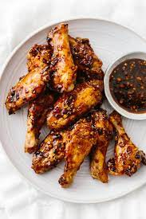
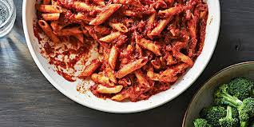

Crispy Garlic Chicken Wings

Soy garlic ginger chicken wings are a sticky, sweet and flavorful appetizer with a kick.
They are infused with a soy, ginger, and garlic marinade, then baked until golden. Serve these tasty wings during game day or your next party.
Ingredients
- Chicken Wings
- Avocado Oil
- Salt and Pepper
- Honey
- Soy Sauce
- Ginger
Steps
- Preheat oven to 425 degrees Fahrenheit.
- Place a piece of parchment paper on a baking sheet then place a wire rack on top. Spread out the wings on a single layer on the baking sheet.
- While the wings are cooking, make the sauce. Add the honey, soy sauce, garlic, ginger, and water to a small pot.
Bluberry Muffin

These blueberry muffins are quick and easy with a moist and tender center bursting with blueberries and perfectly golden brown top. They are extra easy to make, too.
Ingredients
- Frozen Blueberries
- Flour
- Sugar
- Milk
- Eggs
- Baking Powder
Steps
- Whisk flour, sugar, baking powder, and a little salt in a large bowl.
- Add oil, an egg, milk, and vanilla extract then stir with a fork until blended.
- Mix in the blueberries, divide the batter between muffin cups and bake.
Penne Rigate

This is a delicious, super quick side or main dish. I got it from the back of a pasta box and it is yummy!
Ingredients
- 3 Tbsp. olive oil
- 2 cloves garlic, chopped
- 1 jar RAGÚ® Tomato Garlic & Onion Sauce
- 1/2 tsp. dried oregano leaves
- 1/4 tsp. crushed red pepper flakes
- 1 box (1 lb.) penne pasta, cooked and drained
Steps
- Heat olive oil in 12-inch skillet over low heat and cook garlic 30 seconds.
- Stir in remaining ingredients except pasta.
- Simmer uncovered, stirring occasionally, 15 minutes.